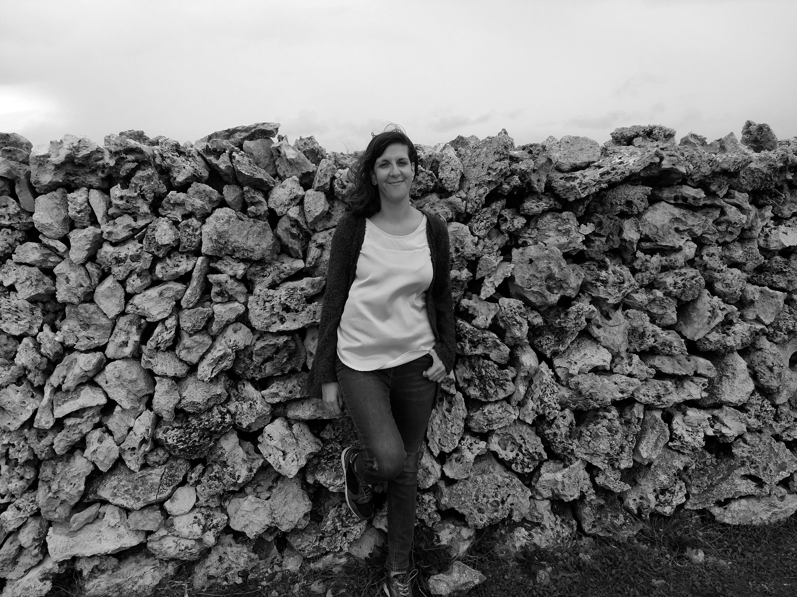

BIOGRAFÍA
1987. Totana, Murcia - España
Eulalia Paco, más conocida como Paco-C , es una artista plástica multidisciplinar.
Su interés por el arte se manifiesta desde su infancia. Creció en contacto con la naturaleza, lo que ocasionaría un fuerte vínculo reflexivo con el paisaje y las formas naturales. Su conexión con la naturaleza, la tierra y el suelo suponen un intercambio artístico fundamental para el desarrollo temático, pictórico y experimental de sus trabajos.
Su obra plástica surge desde la propia experiencia personal en torno la temática de la baja visión como planteamiento artístico.
Utiliza sobretodo fotografía, pintura y la hibridación de éstas para generar su propia técnica personal con la que construir y deconstruir las formas de la realidad con el fin de acercarnos mediante juegos visuales a la abstracción íntima de la imagen misma.
con palabras, sólo puede sugerirse."
John Baldessari
EXPOSICIONES
2017
- Exposición de Bellas Artes 5. Exposición colectiva. Del 26 de mayo al 12 de junio. Cuadros López - Galería de Arte, Murcia.
- Paisajes UM versus: Sierras de Moratalla, Red Natura 2000. Exposición colectiva itinerante (Archena, Caravaca de la Cruz, Cehegín, Lorca y Murcia). Fundación CajaMurcia.
2014
- Acércate al clarck. Exposición colectiva de fotografía. Del 5 al 13 de Mayo. Cuartel de Artillería, Murcia.
2013
- Una visión interior. Exposición colectiva. Del 12 al 19 de Diciembre. ONCE. Delegación Territorial de la Región de Murcía.
2006
- ARTEXPO IV. Exposición colectiva. Del 2 al 9 de Junio. Patio casa de Guevara, Lorca. Murcia.
2005
- II JAM de Jóvenes Creadores. Exposición colectiva. Del 23 al 23 de Septiembre. Arte Joven. Casa de Guevara. Concejo de Juventud de Lorca. Murcia